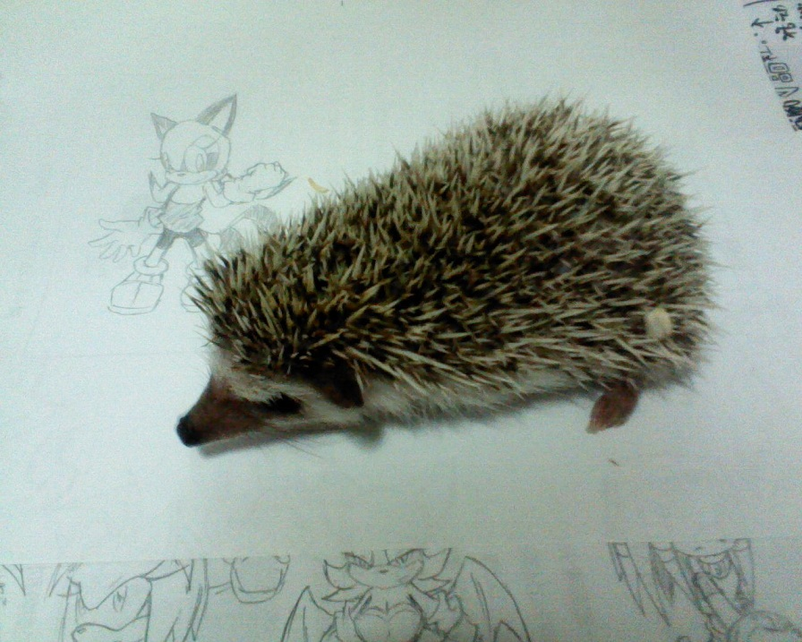

星期五去基隆某家寵物店買到可愛的小刺蝟!!
決定叫他海膽~實在有夠刺的XD

附件: 海膽.jpg
可愛吧?XD(下面的圖就別管啦XD)
嘛,既然養了牠,我就會負起照顧他的責任!
沒想到Sonic X第二集Crise講的是真的!?
刺蝟吃貓食==
好可愛~~~~~~
原來刺蝟真的吃貓食[:smile39:]
跟牠玩的時候要小心,不然驚嚇到牠的時候會被刺到?(溜走)
小刺蝟!!!!!!!!!!
超可愛的>//////////<
@@
原來刺蝟吃貓食啊[:smile32:]
不過還是問一下專業人是比較好=W=
這樣也比較了解要怎麼照顧刺蝟
好好喔~ 金哥養貓 你養刺蝟
我們家只有養魚而已:p
好另類的開箱文[:baozi6:]聽說刺蝟的排泄物沒處理好的話會很臭
沒想到你真的養了XD
不過要小心,聽說刺蝟很脆弱的=3=
下次去你家的時候又多了一隻可以玩的動物了XD
好想念你家小虎啊....
恭喜入手大海膽....刺蝟啦XD
飼養的時候要小心喔
(之前在店裡看到一隻白刺蝟 有點想養~)
[:baozi28:]
本文章最後由 gmasomee3 於 2010/9/19 01:03 PM 編輯
好酷喔 原來大家都有養寵物 我以前養鳥 笨鳥.傻鳥 傻鳥超乖的
它會主動跑向SONIC娃娃嗎?
真的好卡哇伊 它會變大嗎??
真的好可愛啊~~
開始訓練牠跑步
目標：340cm/s
我從來都沒現實的看過刺蝟呢
不知是不是難買到刺蝟呢(明明就是我沒多去一些寵物店)
XD
當牠肚皮向天時, 就可以用樹枝戳牠了 [:smile39:]
刺蝟會吃貓糧那點的確沒錯...XD
據說成長後的刺蝟會變得很大支 ^q^....
要負起主人的責任啊~
還以為是真的海膽...正在擔心等下會不會看見一隻屁屁被海膽魚侵入的怪畫面... °___。\"\